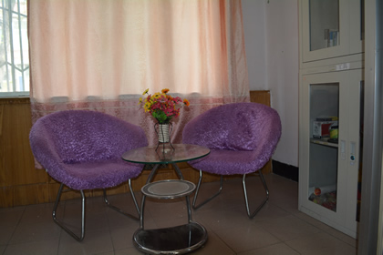
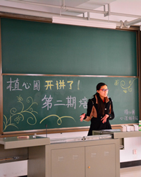
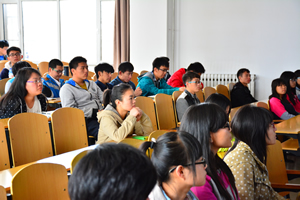
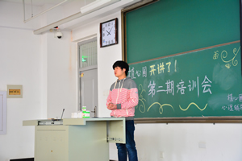
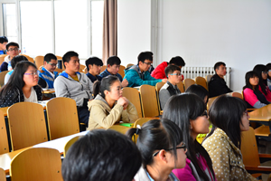
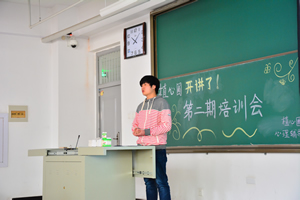

心理普测
是通过系统、专业的测试来了解全院学生的性格特征，建立和完善全院学生的心理健康档案，以促进我院心理健康教育工作及其他学生工作的开展。
心理咨询

是指运用心理学的方法，对心理适应方面出现问题并企求解决问题的求询者提供心理援助的过程。来访者就自身存在的心理不适或心理障碍，通过语言文字等交流媒介，向咨询者进行述说、询问与商讨，在其支持和帮助下，通过共同的讨论找出引起心理问题的原因，分析问题的症结，进而寻求摆脱困境解决问题的条件和对策，以便恢复心理平衡、提高对环境的适应能力、增进身心健康。“植心圃”心理辅导站设置有专业的咨询人员，为来访同学提供积极，有效的帮助和指导。

培训会
机械与动力工程学院“植心圃” 心理辅导站2014-2015学年度第二期培训会在15102如期举行。站长李维玉，各位心理辅导员，后备干部以及14级心理联络员参加了培训。本次培训主要针对二院即将到来的心理健康活动节之手语操大赛对14级联络员和各位辅导员负责人进行工作细化与责任明确。从前期准备到比赛流程，从人员分配到注意事项，事无巨细，一一道来。往届比赛视频的播放更是将各联络员对此次手语操大赛的期待值提到最高。此次培训会虽然时间短，但各联络员和辅导员从中收获的关于手语操训练的经验和技巧必将在接下来的手语操大赛中发挥重大作用。
 


